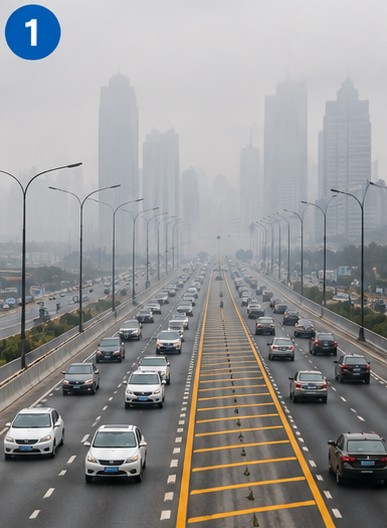
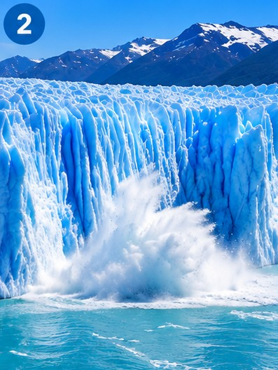
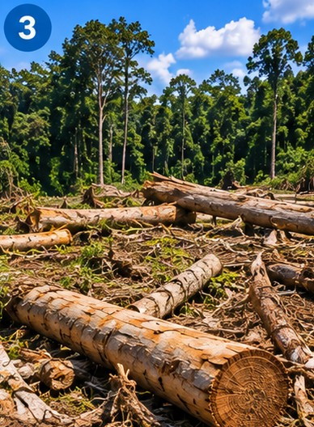
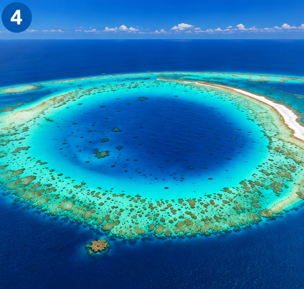
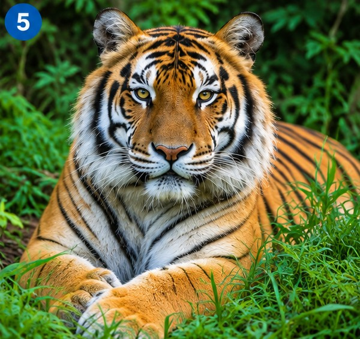

Vocabulary — The world in our hands
Today's theme is the environment. Start with five words IELTS candidates often confuse.
Now the harder set — words you'll meet in today's two readings.
Complete these sentences with the correct form of nature / the environment / countryside / tourism / tourist. One word is used twice.
1. I'm looking for a holiday where I don't damage at all and get close to .
2. We stayed in a cabin built high up in a tree, surrounded by lovely .
3. We stayed with a local family, away from other and the usual spots.
4. We liked it because international hasn't spoilt it yet.
Find the mistake. Four of these five sentences contain a mistake IELTS candidates often make with these words. Mark each one, then reveal the corrections.
1. …the increase in the amount of tourism is inevitable.
2. …nature we live in is very important… (no "the" — nature in general takes no article)
3. …a very positive side to tourism because it brings money… ("it" needs an uncountable noun to refer back to)
4. Correct as written.
5. …leave their rubbish in nature and spoil it… (no "the" here either)
Environmental problems — match the photos
Match each photo to the environmental problem it shows. Choose your answer below the photo, then click the card to reveal it.

Cars, factories and power plants release gases that trap heat in the atmosphere.

Long-term shifts in temperatures and weather patterns, increasingly caused by human activity.

Large areas of forest are cut down every year for farming, timber and development.

Melting ice and warming oceans are slowly raising sea levels around the world.

Animals and plants at serious risk of disappearing completely.
Mini writing — problem and solution
For each photo, describe the problem in your own words and suggest one possible solution.
1. Greenhouse gases
2. Climate change
3. Destruction of forests
4. Rising sea levels
5. Endangered species
Protecting the environment — matching halves
Match each sentence half on the left with the half that completes it correctly.
Which of these four do you think is the most urgent? Explain in 2–3 sentences.
Reading — More Alive Than They Look
A short article about deserts and the wildlife they support. Read it carefully, then answer the questions below.
More Alive Than They Look: Deserts and Their Hidden Ecosystems
When people picture a desert, they usually imagine an empty, lifeless expanse of sand stretching to the horizon. In reality, deserts are among the most surprisingly rich ecosystems on Earth, and they cover roughly a third of the planet's land surface — far more than most people realise. Not every desert is hot, either: while the Sahara can reach temperatures above 45°C by day, deserts such as the Gobi in Mongolia, and even parts of Antarctica, are classified as deserts too, since the defining feature of a desert is extreme dryness, not heat.
Despite these harsh conditions, deserts support an extraordinary range of wildlife found almost nowhere else on the planet. Many species are perfectly adapted to survive with very little water: the fennec fox, native to the Sahara, gets most of the moisture it needs directly from its food, while kangaroo rats in North American deserts can go their entire lives without drinking a single drop of water. Desert plants such as cacti store water in thick, fleshy stems, and some seeds can lie dormant in the soil for years, only sprouting once the rare desert rainfall finally arrives. To cope with the extreme heat, many desert animals are nocturnal, resting underground during the day and only becoming active after sunset.
This biodiversity matters far beyond the desert itself. Because so many desert species are endemic — found in that region and nowhere else — losing a single desert habitat can mean losing a species permanently. Deserts also act as an early warning system for climate change: as temperatures rise, desert boundaries are expanding into neighbouring grasslands in a process known as desertification, often made worse by overgrazing and poor land management.
Ironically, deserts are now also being looked at as part of the solution to climate change, since their intense, near-constant sunlight makes them ideal locations for large-scale solar power projects. Balancing this new use of desert land with protecting the unique wildlife that already lives there is likely to become one of the more difficult environmental questions of the coming decades.
Useful chunks from this text:
- "cover roughly a third of"
- "adapted to survive with very little water"
- "go without a single drop of water"
- "lie dormant"
- "found nowhere else"
- "an early warning system for"
- "made worse by"
- "balance X with Y"
Comprehension
1. According to the article, what proportion of the Earth's land surface do deserts cover?
2. What is the defining feature of a desert, according to the article?
3. How does the fennec fox get most of the water it needs?
4. Why do many desert animals become active at night?
5. What does the article suggest is a difficult environmental question for the future?
Written summary (3–4 sentences)
Summarise why deserts matter more than they might first appear.
Speaking summary
Useful phrases:
- "This article is about…"
- "One example the article gives is…"
- "What surprised me most was…"
- "The article argues that…"
- "Overall, it suggests that…"
Reading 1 — Out of Africa: Solar Energy from the Sahara
A real IELTS-style reading window, exactly like the ones you're used to — built right into this page. Drag the divider to resize the panes, select text to highlight it, and use the question tiles at the bottom to jump between questions.
Useful chunks from this text:
- "of little economic value"
- "yield the same amount as"
- "a well-developed technology"
- "convert sunlight directly into electricity"
- "laid under the Mediterranean"
- "reach its goal of"
- "jump in" (get involved suddenly)
Reading 2 — Morocco's Solar Gamble
A second passage, at a similar level to the one you just read, on a closely related topic.
Morocco's Solar Gamble: The Noor Ouarzazate Complex
On the edge of the Sahara, near the Moroccan city of Ouarzazate, rows of enormous curved mirrors track the sun across the sky from dawn until dusk. This is the Noor Ouarzazate complex, one of the largest concentrated solar power (CSP) facilities in the world, and a central piece of Morocco's ambitious plan to generate a large share of its electricity from renewable sources.
Unlike a conventional solar farm made of flat photovoltaic panels, most of Noor's plants use curved parabolic-trough mirrors, which focus sunlight onto a pipe running along their length. The pipe carries a special fluid that is heated to extremely high temperatures; this heat is then used to produce steam that drives conventional turbines, generating electricity in much the same way a coal or gas power station would — except with no fuel being burned at all. One section of the complex uses a different design entirely: a tower design, in which thousands of mirrors on the ground reflect sunlight onto a single receiver mounted on top of a tall central tower.
One of the complex's most important features is its ability to store energy. Molten salt, heated during the day by the concentrated sunlight, can retain that heat for several hours after the sun goes down, allowing the plant to keep generating electricity well into the evening — something ordinary photovoltaic panels cannot do without separate battery storage. This makes CSP technology particularly valuable for a country like Morocco, where electricity demand often peaks after sunset.
Building a project of this scale in a remote part of the desert was not without difficulty. Enormous quantities of water are needed to keep the mirrors clean and free of the fine desert dust that would otherwise reduce their efficiency — a genuine challenge in one of the driest regions on the continent. The project has also required significant financial support from international lenders, including development banks, since the upfront cost of building CSP plants remains far higher than that of building an equivalent gas-fired power station.
Even so, Morocco has continued to expand the site in phases, arguing that reducing its reliance on imported fossil fuels is worth the initial expense. For a country with almost no oil or gas reserves of its own but an abundance of empty, sun-drenched desert, the logic of trading sand and sunlight for energy independence is difficult to argue with.
Useful chunks from this text:
- "track the sun across the sky"
- "in much the same way as"
- "peaks after sunset"
- "not without difficulty"
- "a genuine challenge"
- "reduce its reliance on"
- "difficult to argue with"
Questions 1–5 — True / False / Not Given.
Questions 6–10 — Sentence completion. NO MORE THAN THREE WORDS from the passage for each answer.
6. The mirrors at most of Noor's plants focus sunlight onto a that carries a heated fluid.
7. In the tower design, mirrors reflect sunlight onto a receiver mounted on a central .
8. , heated during the day, allows the plant to keep producing electricity after sunset.
9. Building CSP plants has needed financial support from international .
10. Morocco is expanding the project because it wants to reduce its dependence on imported .
Day 15 complete! 🎉
All 6 tasks done — strong work with today's environment readings. Come back tomorrow for the next day.